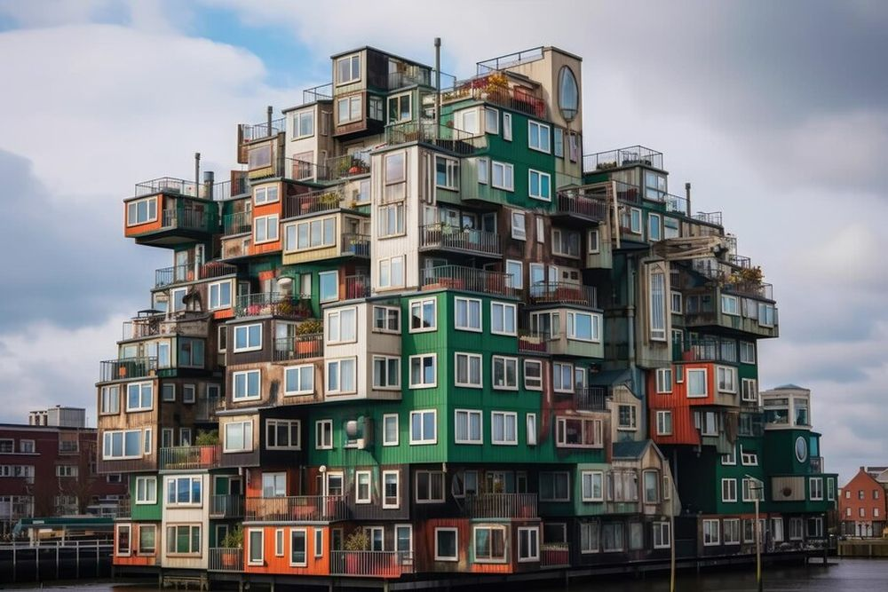

Descoperă Rotterdam - Orașul modern și inovator din Țările de Jos
Rotterdam este un oraș vibrant din Țările de Jos, cunoscut pentru arhitectura sa contemporană și inovatoare:
-

Arhitectură de excepție
Orașul este faimos pentru clădirile moderne și îndrăznețe, precum și pentru simbolul său, Turnul Euromast.
-

Markthal spectaculos
Markthal este o piață alimentară sub un arc de clădire impresionant, cu opere de artă și mâncăruri delicioase.
-

Portul aglomerat
Portul Rotterdam este unul dintre cele mai mari și mai importante porturi din lume.
-

Muzee variate
Orașul oferă numeroase muzee, inclusiv Muzeul Maritim și Muzeul Boijmans Van Beuningen.
-

Evenimente culturale
Rotterdam găzduiește festivaluri, expoziții și evenimente artistice în aer liber pe tot parcursul anului.
Concluzii
Rotterdam este un oraș modern, în continuă dezvoltare, cu o atmosferă inovatoare și o gamă variată de atracții.